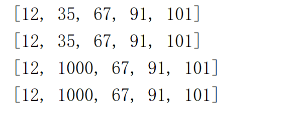
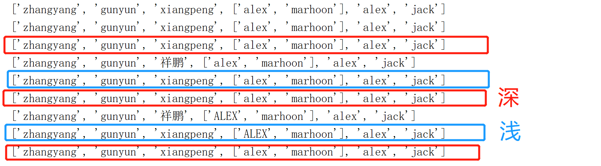

以下详细讲解：python深复制，浅复制与赋值语句的区别
1. '='赋值语句，常规复制只是将另一个变量名关联到了列表，并不进行副本复制，实例如下：
var1=[12,35,67,91,101]
var2=var1 # var2 只是关联到了var1
print(var1)
print(var2)
var1[1]=1000 # var1和var2指向的同一个值发生了变化
print(var1)
print(var2)结果：
2.浅复制--只复制列表的第一层，但产生了新的副本；深复制--复制二层地址，产生新的副本，较占内存，一般很少使用
# 深与浅 copy
import copy
names=['zhangyang','gunyun','xiangpeng',['alex','marhoon'],'alex','jack']
names2=names.copy() # 浅拷贝，拷贝了一层 不等价于 names=names2
names3=copy.deepcopy(names) # 深拷贝 （一般不用）
print(names)
print(names2)
print(names3)
names[2]='祥鹏' # names[2]指向了'祥鹏'
print(names)
print(names2)
print(names3)
names[3][0]='ALEX' # 这里改的是地址
print(names)
print(names2)
print(names3)结果：
总的来讲，赋值语句不产生新的副本，只是变量名的关联；浅复制赋值列表第一层；深复制copy整个列表（包括内层地址）；